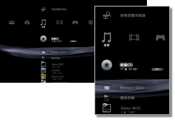

音樂 > 音樂簡介
音樂簡介
選擇 （音樂）時，會顯示以下的圖示。但顯示的圖示可能因操作狀況而異。
（音樂）時，會顯示以下的圖示。但顯示的圖示可能因操作狀況而異。

 |
（標題） | 顯示迷你操作介面。僅會於播放音樂時顯示。 |
|---|---|---|
 |
搜尋媒體伺服器 | 可搜尋已經由網路連線之DLNA伺服器。 |
 |
媒體伺服器 | 連接DLNA伺服器後，可播放其保存的音樂。圖示因DLNA伺服器而異。 |
 |
（標題） | 可播放Super Audio CD。 |
 |
（標題） | 可播放音樂CD。 |
 |
資料光碟 | 可播放保存於CD-R、DVD-R等的音樂檔案。 |
|
DVD光碟 | 可播放保存於DVD-R等，DSD格式的音樂檔案。 |
 |
Memory Stick™ | 可播放保存於Memory Stick™的音樂檔案。* |
 |
SD Memory Card | 可播放保存於SD Memory Card的音樂檔案。* |
 |
CompactFlash® | 可播放保存於CompactFlash®的音樂檔案。* |
 |
PSP™（PlayStation®Portable） | 可播放插入PSP™主機之Memory Stick™保存的音樂檔案。 |
 |
PSP™（PlayStation®Portable） | 可播放PSP™go主機記憶體保存的音樂檔案。 |
 |
相機 | 可瀏覽保存於支援PS3™之數碼（數位）相機中保存的音樂檔案。 |
 |
WALKMAN®／ATRAC Audio Device（WALKMAN®） | 可播放保存在WALKMAN®／ATRAC Audio Device（WALKMAN®）的音樂檔案。 |
 |
ATRAC Audio Device | 可播放保存在ATRAC Audio Device（WALKMAN®）的音樂檔案。 |
 |
USB裝置 | 可播放保存於USB大容量儲存裝置的音樂檔案。 |
 |
播放目錄 | 可新建播放目錄或編輯／播放已建立的播放目錄。 |
 |
（資料夾） | 僅於儲存媒體中存在使用電腦新建之資料夾時顯示。 |
 |
（被保存於主機儲存空間中的音樂檔案） | 可播放保存於PS3™內藏主機儲存空間中的音樂檔案。若包含專輯插圖，尚會顯示縮圖。 |
| * |
部分PS3™機種需於使用儲存媒體時，搭配非隨附的USB讀卡機等。使用USB讀卡機時，會顯示為 |
|---|
 （USB裝置）。
（USB裝置）。提示
- DLNA的詳細內容，請參閱
 （設定）＞
（設定）＞ （網路設定）＞［媒體伺服器連線］。
（網路設定）＞［媒體伺服器連線］。 - PS3™可能因光碟或儲存媒體等種類的限制，而出現無法正確辨識的情形。
- 使用數碼光纖輸出端子時，為簡易播放（以44.1 kHz 16 bit播放）。
重要
Super Audio CD無法於部分PS3™上播放。詳細請參閱［關於可播放的光碟種類］。